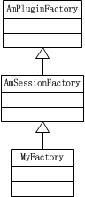

插件实例的初始化
插件实例是一个全局单例，它的初始化时在程序的main函数中被调用的，main函数在sems.cpp中，代码如下：
int main(int argc, char* argv[])
{
...
INFO("Loading plug-ins\n");
AmPlugIn::instance()->init();
if(AmPlugIn::instance()->load(AmConfig::PlugInPath, AmConfig::LoadPlugins))
goto error;
AmPlugIn::instance()->registerLoggingPlugins();
...
}
插件实例的初始化主要做了以下几个事情：
- 读取配置文件中禁用的payload参数（对应sems.conf配置文件中的exclude_payloads参数）。解析这个参数对应的值，并将解析出来的结果保存在一个字符串set中，提供给后续使用，这个set变量的名称是：std::set<string> excluded_payloads;
- 添加内置的codec到成员变量std::map<int,amci_codec_t*> codecs中，这个map以codec的内置id作为key（所有codec的id被定义在文件codecs.h中），acmi_codec_t的声明如下：
struct amci_codec_t {
int id; //codec内置id
amci_converter_t encode; //将输入缓存（格式为pcm16）编码为指定的格式的编码函数
amci_converter_t decode; //解码函数
amci_plc_t plc; //丢包补偿函数
amci_codec_init_t init; //codec初始化函数
amci_codec_destroy_t destroy; //codec销毁函数
amci_codec_bytes2samples_t bytes2samples; //计算指定字节数包含多少个采样点
amci_codec_samples2bytes_t samples2bytes; //计算指定采样定包含多少个字节
};
- 添加内置的payload到成员变量std::map<int,amci_payload_t*> payloads中，这个map以payload的id作为key，amci_payload_t的声明如下：
struct amci_payload_t {
int payload_id; //payload id，其取值遵循RFC 1890
const char* name; //payload 名称，其取值遵循RFC 1890。常见的例如：PCMA，PCMU
int sample_rate; //采样频率，即每秒多少个采用点
/**
* Sample rate that is advertised in SDP.
* example: g722 has advertised_sample_rate 8000, and sample_rate 16000.
*/
int advertised_sample_rate;
int channels; //声道数，1表示单声道，2表示双声道
int codec_id; //对应的内置codec id
/** @see AMCI_PT_AUDIO_LINEAR, AMCI_PT_AUDIO_FRAME */
int type;
};
需要注意的是：加载payload时，如果这个payload对应的codec没有加载，那么payload也无法被加载。另外，如果在配置文件中设置了codec的顺序（对应sems.conf配置文件中的codec_order字段），那么payload也会按顺序插入到成员变量std::multimap<int,int> payload_order中。
插件的加载
代码调用顺序：
[sems.cpp] AmPlugIn::instance()->load(AmConfig::PlugInPath, AmConfig::LoadPlugins)
[AmPlugIn.cpp] int AmPlugIn::load(const string& directory, const string& plugins)
[AmPlugIn.cpp] int AmPlugIn::loadPlugIn(const string& file, const string& plugin_name, vector<AmPluginFactory*>& plugins)
插件加载的核心在于loadPlugIn函数的处理，它使用dlopen，dlsym的方式动态的加载.so库。通过查找动态库是否导出了指定名称的函数来判断插件是否标准或具备某项功能。对于一个插件的导出函数，它的查找步骤为：
- amci_exports_t* exports = (amci_exports_t*)dlsym(h_dl,"amci_exports") - 查找动态库是否导出了acmi_exports结构，该结构是插件具有媒体编解码处理能力。acmi_export_t的声明为：
struct amci_exports_t {
/** Module name */
char* name;
/** Codec module load function. can be NULL */
amci_codec_module_load_t module_load;
/** Codec module destroy function. can be NULL */
amci_codec_module_destroy_t module_destroy;
/** NULL terminated array of amci_codec_t */
struct amci_codec_t* codecs;
/** NULL terminated array of amci_payload_t */
struct amci_payload_t* payloads;
/** NULL terminated array of amci_inoutfmt_t */
struct amci_inoutfmt_t* file_formats;
};
SEMS中导出了这个结构的插件有：adpcm.so，g722.so，g729.so，gsm.so，ilbc.so，isac.so，l16.so，mp3.so，opus.so，silk.so，speex.so，wav.so。
如果这个插件被识别为具有媒体处理能力，那么该插件中的所有codec，payload和file format将会被添加到相应的set中。
- FactoryCreate fc = (FactoryCreate)dlsym(h_dl,FACTORY_SESSION_EXPORT_STR) - 查找动态库是否导出“session_factory_create”符号。导出了该函数的插件具有创建session的能力。导出的方式是插件中的类继承自AmSessionFactory类。具有“session_factory_create ”导出符号的插件具有如下关系的类图：

SEMS中导出了这个结构的插件有：announce_auth.so，ann_b2b.so，announcement.so，announce_transfer.so，annrecorder.so，voicemail.so，sbc.so，dsm.so等等。
具有“session_factory_create ”能力的插件就是SEMS的一个app，它有一个名称，并且有一个独立的配置文件用来配置这个app的全局配置，例如etc/sbc.conf，etc/dsm.conf等。
如果插件具有这个能力，那么紧接着SEMS就会对该插件进行加载，加载的步骤为（实现代码包含在int AmPlugIn::loadAppPlugIn(AmPluginFactory* f)中）：
- 查找插件是否已经加载，即成员变量name2app中是否包含该插件。name2app的声明为std::map<string,AmSessionFactory*> name2app，他是一个map，以app名称为key；
- 如果未找到，则将该插件添加到name2app变量中；
- 将插件添加到module_objects变量中。（module_objects的原型与name2app一样，暂时不太明白为什么用定义两个内容一样的变量。）
- FactoryCreate fc = (FactoryCreate)dlsym(h_dl,FACTORY_SESSION_EVENT_HANDLER_EXPORT_STR) - 查找动态库是否导出“sess_evh_factory_create”符号。导出了该函数的插件具有处理session事件的能力。导出的方式是插件中的类继承自AmSessionEventHandlerFactory类，具有如下关系类图：

SEMS中导出了这个结构的插件有：session_time.so
具有这个能力的插件被保存在变量name2seh中。
- FactoryCreate fc = (FactoryCreate)dlsym(h_dl,FACTORY_PLUGIN_CLASS_EXPORT_STR) - 查找动态库是否有继承自AmDynInvokeFactory的类，继承自这个类的插件具有invoke能力，插件被保存在name2di变量中
NOTE：一个插件可以具有多种能力。
插件的初始化
在通过dlopen，dlsym调用成功的插件，会保存在一个数组中，然后循环调用每个插件的onLoad函数，然后由每个插件的onLoad完成自己的初始化。具体代码在：
int AmPlugIn::load(const string& directory, const string& plugins)
{
...
DBG("AmPlugIn: modules loaded.\n");
DBG("Initializing %zd plugins...\n", loaded_plugins.size());
for (vector<AmPluginFactory*>::iterator it =
loaded_plugins.begin(); it != loaded_plugins.end(); it++) {
int err = (*it)->onLoad();
if(err)
return err;
}
return 0;
}